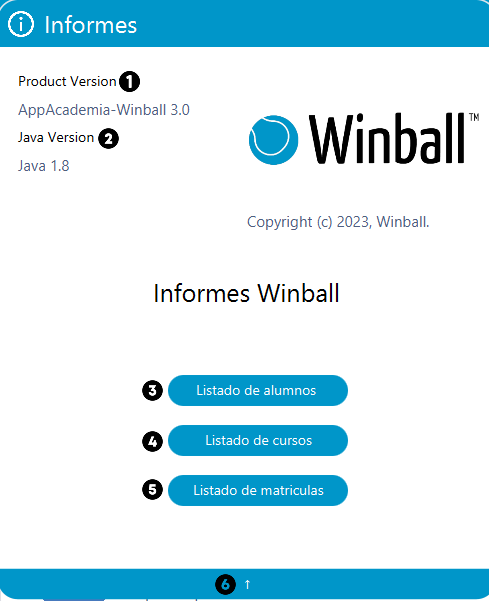
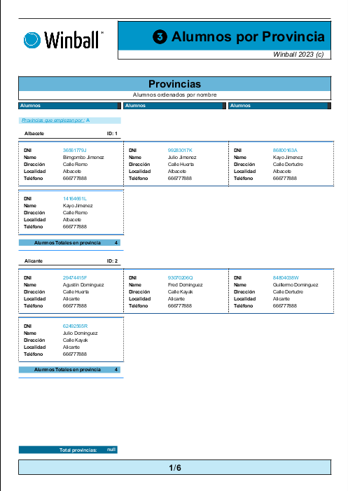
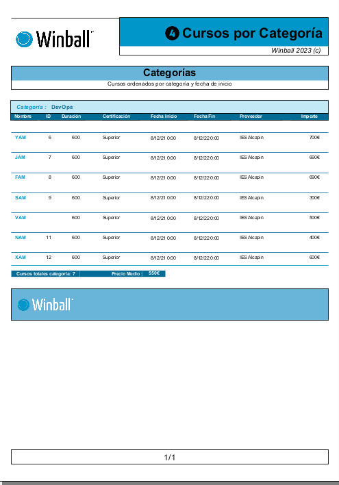
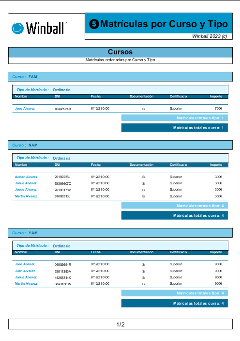

Ayuda informes
En esta sección podremos abrir los diferentes informes.

Los informes se visualizarán con los diferentes formatos:



Información a tener en cuenta:
- Product Version. Se encuentra la version actual de la aplicación
- Java Version. Version de Java usado en la aplicación acorde a la version de la aplicación.
- Listado de alumnos. Se puede visualizar
- Listado de cursos. Se puede visualizar
- Listado de matriculas. Se puede visualizar
- Regresar. Regresar al inicio de la aplicación.